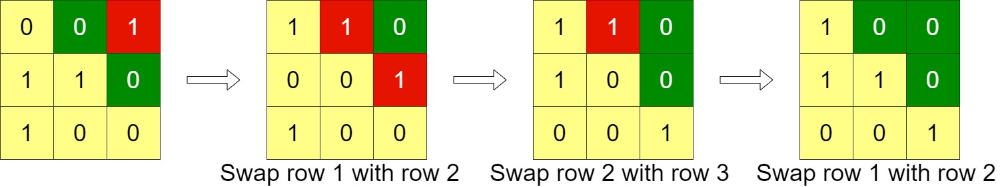
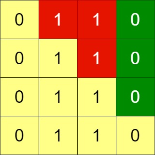
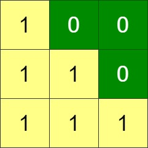

| Category | Difficulty | Likes | Dislikes |
|---|---|---|---|
| Algorithms | Medium | 584 | 72 |
Given an n x n binary grid, in one step you can choose two adjacent rows of the grid and swap them.
A grid is said to be valid if all the cells above the main diagonal are zeros.
Return the minimum number of steps needed to make the grid valid, or -1 if the grid cannot be valid.
The main diagonal of a grid is the diagonal that starts at cell (1, 1) and ends at cell (n, n).
Example 1:

Input: grid = [[0,0,1],[1,1,0],[1,0,0]]
Output: 3Example 2:

Input: grid = [[0,1,1,0],[0,1,1,0],[0,1,1,0],[0,1,1,0]]
Output: -1
Explanation: All rows are similar, swaps have no effect on the grid.Example 3:

Input: grid = [[1,0,0],[1,1,0],[1,1,1]]
Output: 0
Constraints:
n == grid.length == grid[i].length1 <= n <= 200grid[i][j] is either 0 or 1